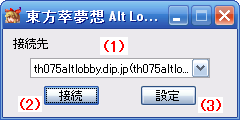

東方萃夢想 Alt Lobby System 東方萃夢想ロビーシステム(RC4) 操作説明 接続ウィンドウ
はじめに
このドキュメントは、東方萃夢想 Alt Lobby Systemのテスト版の操作説明を簡略にまとめたものです。
アプリケーションと同様に本ドキュメントもテスト版であり、機能の説明やスクリーンショットなどは予告なく変更されることがあります。
接続ウィンドウ

操作説明
- (1)接続先
- 接続先を選択します。テスト版では、デフォルトのth075altlobby.dip.jp(th075altlobby.dip.jp:7555)を選択してください。
- (2)接続
- (1)で選択したサーバーに接続します。
- 接続に成功すると、メインウィンドウが表示されます。
- (3)設定
- 設定ウィンドウを開きます。
リンク
- 接続ウィンドウ
- http://th075altlobby.dip.jp/usage/connect_win.html
- メインウィンドウ
- http://th075altlobby.dip.jp/usage/main_win.html
- 設定ウィンドウ クライアント設定
- http://th075altlobby.dip.jp/usage/setting_win_client.html
- 設定ウィンドウ Caster設定
- http://th075altlobby.dip.jp/usage/setting_win_caster.html
- 設定ウィンドウ IM(1)設定
- http://th075altlobby.dip.jp/usage/setting_win_im1.html
- 設定ウィンドウ IM(2)設定
- http://th075altlobby.dip.jp/usage/setting_win_im2.html
- 東方萃夢想 Alt Lobby System 東方萃夢想ロビーシステム 操作説明
- http://th075altlobby.dip.jp/usage/
最終更新 : 2010-05-16 21:55
作成日時 : 2010-02-19 1:00
サイトトップ : http://th075altlobby.dip.jp/